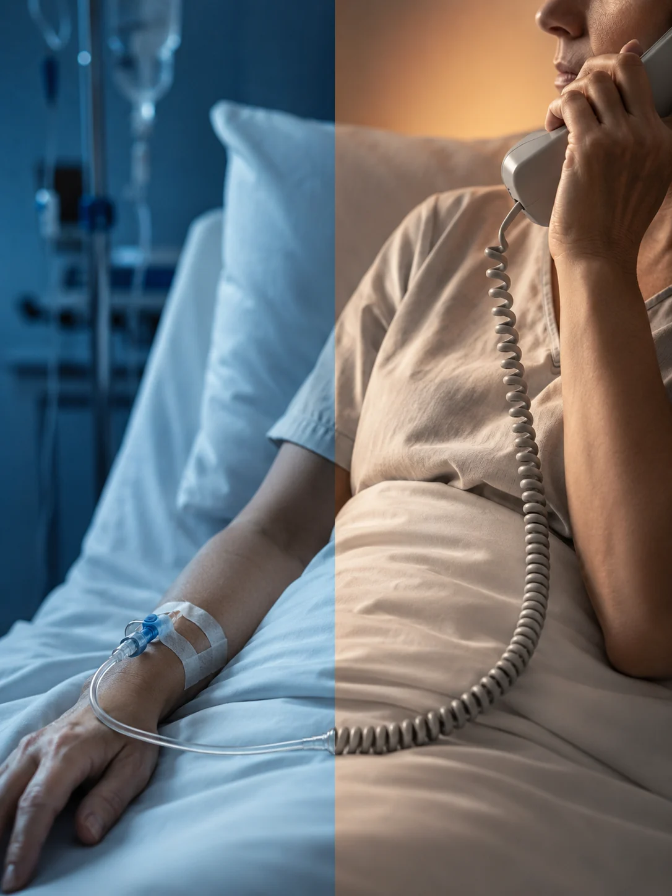
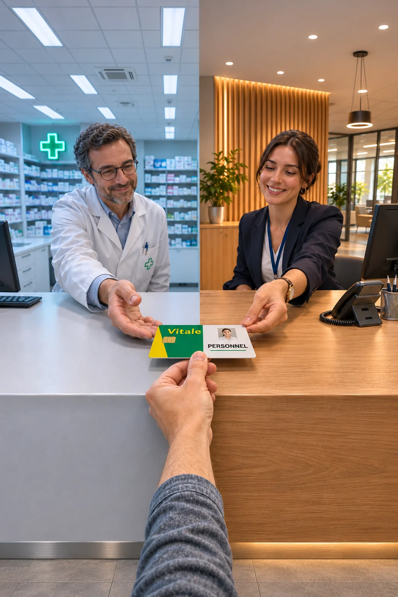
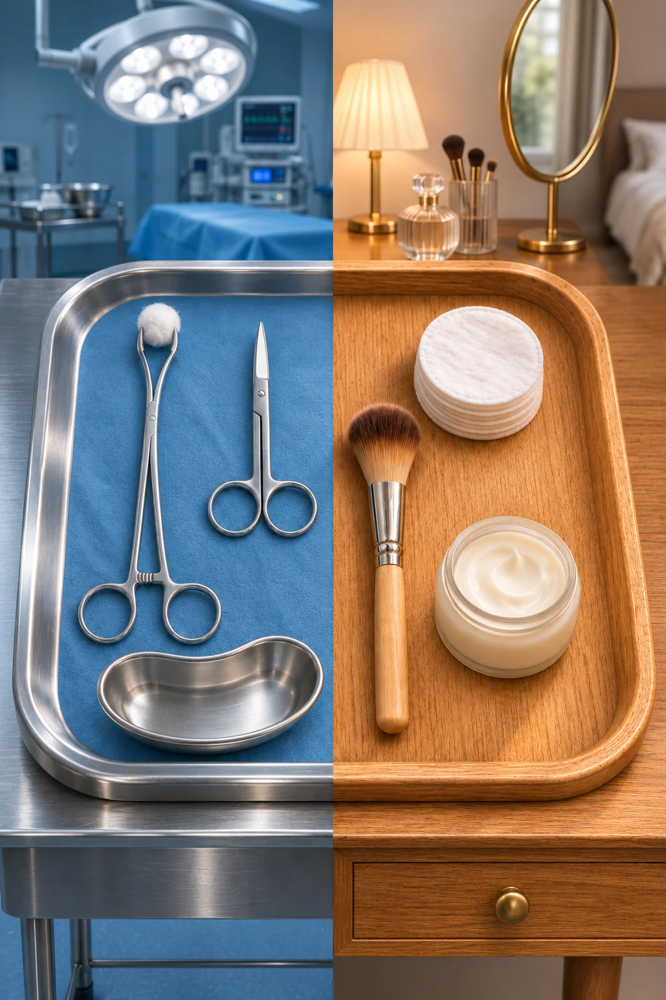
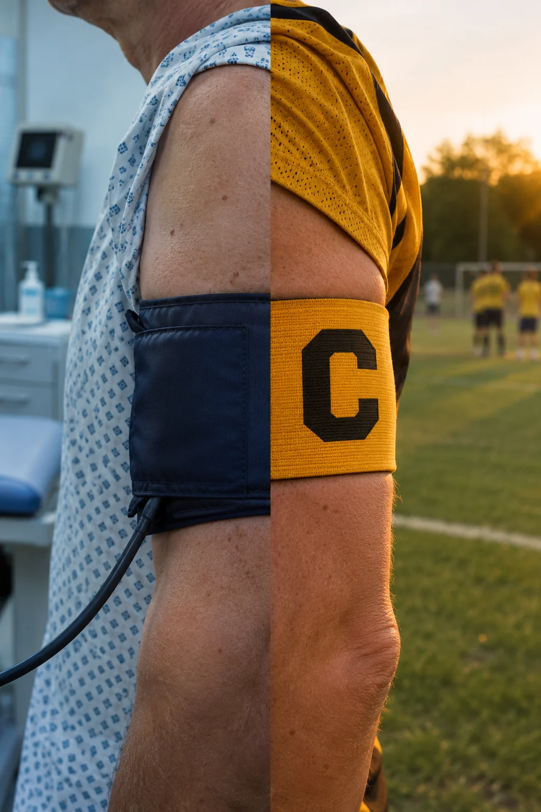
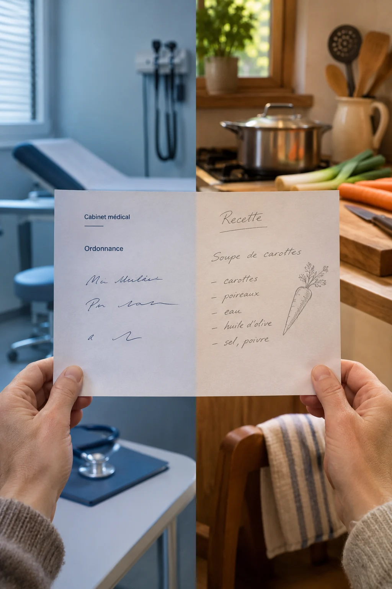
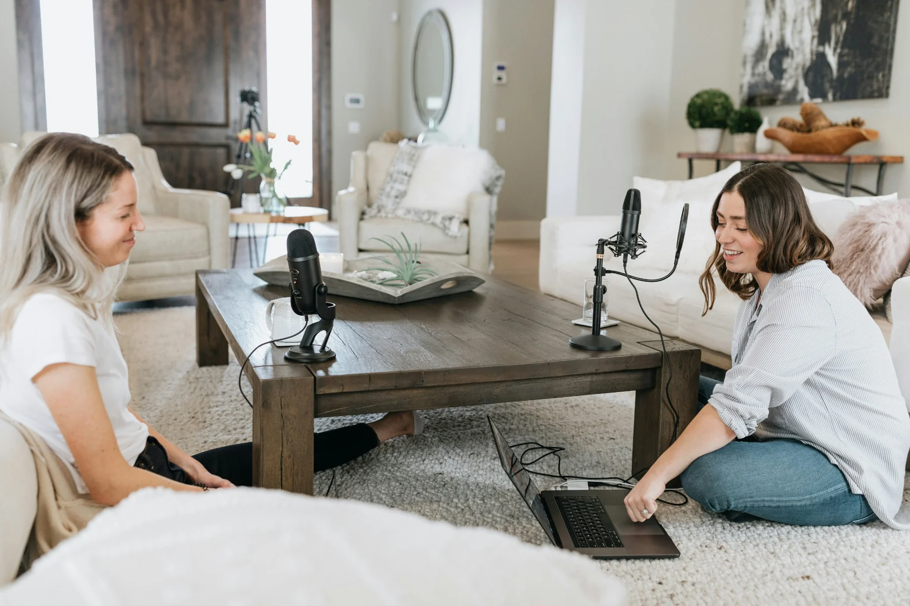
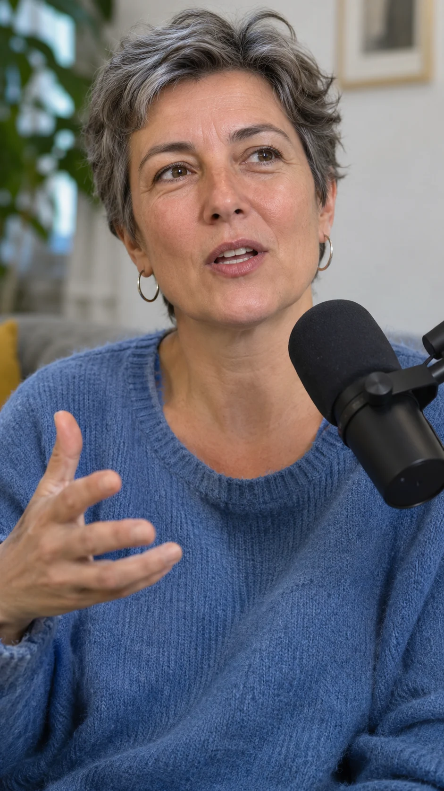

Studio Ludo.
Studio Ludo.Soutien psychologique et écoute
Trouver un espace pour parler de ce que la maladie fait vivre, à soi ou à un proche.
Stratégie créative · Campagne 360°
Dans le cadre d’un appel d’offres en agence, j’ai imaginé une campagne qui détourne les codes médicaux pour faire connaître les accompagnements de la Ligue.
Stratégie créative
Big Idea
Certains symptômes ne se voient pas. Ils se vivent.
La fin d’un traitement ne fait pas disparaître les factures accumulées, la crainte de reprendre le travail ou le silence entre amis. Pour les proches aussi, le quotidien change : un conjoint aménage ses horaires, un parent cherche les mots. Avec « Les symptômes invisibles », j’ai voulu rendre ces expériences aussi perceptibles qu’un signe physique.
Les dispositifs
La Ligue souhaite faire connaître six formes d’accompagnement. La campagne les relie à des situations que les personnes malades, les personnes en rémission et leurs proches peuvent reconnaître dans leur quotidien.
Trouver un espace pour parler de ce que la maladie fait vivre, à soi ou à un proche.
Faire le point sur les dépenses, les ressources du foyer et les démarches à entreprendre.
Préparer une reprise, évoquer ses inquiétudes et identifier les interlocuteurs utiles.
Prendre soin de son corps et de l’image que l’on a de soi pendant ou après les traitements.
Retrouver du mouvement dans les gestes du quotidien, chacun à son rythme.
Pouvoir parler des changements de goût ou d’appétit et adapter les repas à ses besoins.
Stratégie de campagne
L’affiche attire le regard par un objet familier qui change de sens.
DireMettre des motsLe carrousel nomme une difficulté, puis montre comment elle peut être accompagnée.
EntendreS’identifierLe podcast donne le temps de raconter ce que l’entourage ne perçoit pas toujours.
AgirTrouver de l’aideUn lien ou un QR code permet de poursuivre vers la ressource adaptée.
Voir · Affichage
Un geste traverse deux scènes. D’un côté, le soin que l’on reconnaît. De l’autre, la difficulté qu’il reste à accompagner.

01 / 06 · Soutien psychologique et écoute
À l’hôpital, un tuyau de perfusion court le long du lit. À la maison, le même fil devient celui d’un téléphone porté à l’oreille. Ce raccord raconte un besoin simple : avoir quelqu’un à qui parler.
02 / 06 · Aide sociale et financière
Les mains tiennent toujours la même plaquette. En passant de la chambre d’hôpital à la maison, les comprimés deviennent des pièces. Le geste du traitement révèle une autre préoccupation, celle de pouvoir faire face aux dépenses du foyer.

03 / 06 · Retour à l’emploi
Au comptoir de la pharmacie, une main tend sa carte Vitale. À l’accueil de l’entreprise, elle reçoit son badge. Entre ces deux gestes familiers se joue une étape qui peut demander du temps et un accompagnement.

04 / 06 · Soins socio-esthétiques
Le rebord du plateau relie le bloc opératoire à la coiffeuse d’une chambre. D’un côté, une pince tient une boule de coton. de l’autre, des disques démaquillants attendent près d’un pinceau. Le soin se prolonge dans les gestes que l’on retrouve devant son miroir.

05 / 06 · Activité physique adaptée
Un brassard de tension entoure le bras. Sur le terrain, au même endroit, apparaît le brassard de capitaine. Retrouver le groupe, même pour quelques minutes de jeu, donne un sens concret à la reprise d’une activité adaptée.

06 / 06 · Conseils diététiques
Une ordonnance et une fiche recette tiennent sur la même feuille. Le geste de lecture se poursuit du cabinet à la cuisine. La question devient très quotidienne : que préparer quand les goûts, l’appétit ou les envies ont changé ?
Dire · Social media
Le premier écran emprunte un mot au diagnostic. Les suivants donnent à cette formule son sens et ouvrent une piste d’accompagnement. Ces accroches sont des créations publicitaires fictives.
Entendre · Podcast filmé
Ce qu’on ne voit pas donne une place aux récits des personnes concernées, de leurs proches et des professionnels de l’accompagnement.

Chaque conversation est pensée pour être filmée. Le même échange peut s’écouter en déplacement, se regarder en entier ou se découvrir à travers un extrait.

Comment la maladie peut fragiliser les relations sociales, créer un sentiment de solitude et rendre la parole difficile.
Voix envisagées. Une personne malade ou en rémission, un psychologue, un proche ou un bénévole d'écoute.
Intention. Libérer la parole, sensibiliser à l'isolement et faire connaître les dispositifs d'écoute et de soutien psychologique.
La baisse des revenus, les dépenses, les démarches administratives et les difficultés économiques qui peuvent accompagner la maladie.
Voix envisagées. Une personne concernée et un professionnel de l'accompagnement social.
Intention. Rendre visibles les difficultés financières liées à la maladie et orienter vers les dispositifs d'aide existants.
La peur de reprendre le travail, le regard des collègues, les interruptions de carrière, la recherche d'emploi et la reconstruction d'une trajectoire professionnelle.
Voix envisagées. Une personne ayant vécu une interruption professionnelle liée à la maladie et un professionnel de l'accompagnement vers l'emploi.
Intention. Mettre en lumière les difficultés de la reprise professionnelle et montrer qu'un accompagnement peut être mobilisé.
Les transformations physiques, les cicatrices, la perte de confiance en soi et la difficulté de se reconnaître dans le miroir pendant ou après les traitements.
Voix envisagées. Une personne ayant vécu ces transformations et un professionnel de la socio-esthétique.
Intention. Sensibiliser aux conséquences invisibles des transformations corporelles et valoriser les soins socio-esthétiques.
La fatigue, la diminution des capacités physiques, la perte de mobilité et d'autonomie, ainsi que la reprise progressive d'une activité adaptée.
Voix envisagées. Une personne concernée et un professionnel de l'activité physique adaptée.
Intention. Montrer que retrouver le mouvement peut faire partie de l'accompagnement, quels que soient l'âge, le niveau sportif ou les capacités physiques de départ.
La perte d'appétit, les difficultés alimentaires et les changements dans le rapport à l'alimentation pendant et après les traitements.
Voix envisagées. Une personne concernée, un proche et un diététicien.
Intention. Sensibiliser aux difficultés nutritionnelles liées à la maladie et faire connaître les possibilités d'accompagnement alimentaire.
Agir · Orientation
Une personne se reconnaît dans une affiche, un post ou un épisode. Dès ce moment, elle doit pouvoir trouver à qui s’adresser. Chaque contenu intègre donc une invitation à agir.
Un message général invite à découvrir les services de la Ligue. Un contenu consacré à un besoin précis dirige vers l’aide correspondante. Selon le support, cette invitation peut prendre la forme d’un lien, d’un QR code imprimé ou d’un numéro à appeler.
Par exemple, le carrousel sur l’emploi se termine par une ressource de la Ligue pour préparer sa reprise du travail.